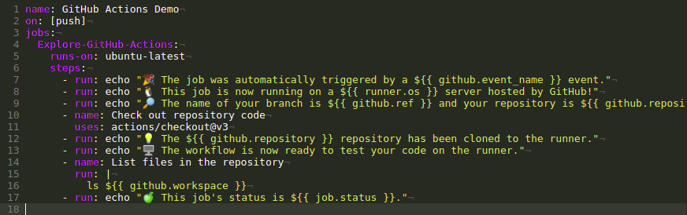

The MkDocs Documentation Build Process
INTRODUCTION
The document explains how to set up a robust documentation system using MkDocs, GitHub and GitHub Actions, and any server that integrates with GitHub.
You can find the source codes and website of the sample in the links below:
-
Source code - https://github.com/iSOLveIT/mkdocs-gen
-
Website - https://resources.breadboardmates.com
Topics covered in this document are:
-
Setting up MkDocs application or working environment on local machine
-
Setting up automation using GitHub and GitHub Actions
- Updating documentation website automatically
-
Maintaining documentation
-
Starting a new document
-
Updating an old document
-
Pre-Requisites
To implement this documentation build process, you must have:
-
Python 3.6+ installed.
-
Knowledge about writing documentation using the Markdown format.
-
A GitHub account and a repository for the documentation source files.
-
A hosting platform like Plesk that has a GitHub client.
SETTING UP MKDOCS APPLICATION OR WORKING ENVIRONMENT ON LOCAL MACHINE
MkDocs is a Python documentation tool that uses Markdown as its markup language to generate intelligent and beautiful documentation in HTML.
Building and testing the documentation source using Mkdocs on the local machine
To write and build the documentation website, you need to set up a Python virtual environment and install MkDocs.
Set up the Python virtual environment using this command:
Install MkDocs using this command:
With MkDocs installed, you can run the command,
to create a new MkDocs project that contains a source directory (docs) and a default mkdocs.yml file with the most useful configuration values.
The mkdocs.yml contains the MkDocs configurations, where you can configure all aspects of how MkDocs reads your sources and builds your documentation.

Fig. 1: Source directory for a MkDocs documentation
MkDocs reads its contents from files with the extension .MD which you
have referenced in the mkdocs.yml file. These .MD files contain
the structure of the documentation and the text to be displayed on the
documentation website.
After you have set up the source directory for the documentation, you can use the command below to run the built-in development server provided by MkDocs.
You can use the development server to test your documentation while building it. It is important to note that this command does not provide the documentation build files.
To generate the documentation build files, you can run this command:
The command above builds the MkDocs documentation into a folder called site.
After writing and testing the documentation source on the local machine, you can transfer the source files (without the site folder) to your GitHub remote repository.
SETTING UP AUTOMATION USING GitHub AND GitHub ACTIONS
On the GitHub remote repository, we must set up GitHub Action workflows to handle automatic testing and building of the documentation whenever we trigger a push or pull request event.
What is GitHub Action?
GitHub Action is a (CI/CD) platform that allows you to automate your build, test, and deployment pipeline using workflows. When using GitHub Action, GitHub will provide you with Linux, Windows, and macOS virtual machines to run your workflows.
You can configure GitHub Action workflows to trigger when an event, such as a push, occurs in your repository.
Configuring a GitHub Actions Workflow
What is a workflow?
A workflow is a configurable and automated process that runs one or more jobs. Each job runs inside its virtual machine runner, or a container, and has one or more steps that either run a script you defined or run an action from the GitHub Marketplace.
Workflows are defined by a YAML file checked in your repository and are triggered either manually or by an event in the repository. Below is an example of a GitHub Action workflow.

Fig. 2: A YAML file for a GitHub Action workflow
Using GitHub workflow to automate build and test process for our documentation
For us to build and test the documentation, we will configure two (2) GitHub Actions workflows and store them under the .github/workflows directory. The two (2) GitHub Actions workflows are mkdocs_test.yml and main.yml.
The mkdocs_test.yml workflow runs a CI test to check if the links in the documentation works. We trigger this workflow on each pull request events sent to the main branch of the official repository.
The main.yml workflow, on the other hand, check if the links in the documentation works, compiles the MkDocs sources in the official repository's main branch, and updates the docs-build branch with the build files. We trigger this workflow on each push events on the main branch of the official repository.
Testing and Publishing Documentation Changes
On the official repository, if a contributor sends a pull request to the repository's main branch, we test the changes by running the "Pull Request MkDocs Check" (i.e., mkdocs_test.yml) workflow.
If the test is successful, then the documentation project maintainer will merge the pull request changes after reviewing the pull request. This is to ensure that we review the changes in the pull request before merging into the official repository.
When the documentation project maintainer merges the pull request changes to the repository's main branch, GitHub triggers the "Compile MkDocs source and update docs-build branch" (i.e., main.yml) workflow automatically to build the documentation.
If the build is successful, it sends the documentation build files to the docs-build branch. The docs-build branch is where the hosting platform copies the documentation build files to update the documentation website.
MAINTAINING DOCUMENTATION
Creating the structure of a document
Markdown lets you add structural elements to your document, such as headings (h1, h2, h3 etc.).
The hashes move lower-level headings further to the right, so they appear indented.
There are a few ways to add headings in Markdown.
The recommended one is to prefix a heading with hashes #, one for each level of heading:
<hr />), or lines.
You create these in Markdown using three (or more) hyphens -, asterisks *, underscores _or equals = signs.
Place them alone on a line, with blank lines on either side:
Lists are another important structural element.
Unordered lists (<ul>) are created by beginning the line with an asterisk *, plus + symbol, or hyphen -,
followed by a space or tab, then the text.
Ordered lists (<ol>) are numbers followed by periods. The numbers don't necessarily have to be in order.
Below is an example of an unordered and ordered lists
### Unordered List
* this is an
* unordered list
+ this is another
+ unordered list
### Ordered List
1. this is an
2. ordered
3. list
1. and so
1. is this too
Note
If you want to start a line with a number and a period without starting a list, you need to escape the period with a backslash \:
Finally, paragraphs of normal text are separated by one or more blank lines:
Starting a new document
MkDocs uses regular Markdown (.md) files as the source for its
documentation. We place these Markdown files in the documentation
directory called docs which exist at the top level of your project,
alongside the mkdocs.yml configuration file.
All Markdown files included in your documentation directory will be rendered in the built site, regardless of any settings.
The simplest project you can create will look something like this:
You can also create multipage documentation, by creating several Markdown files:
The file layout you use determines the URLs that are used for the generated pages. Given the above layout, pages would be generated for the following URLs:
You can also include your Markdown files in nested directories if that better suits your documentation layout.
Source files inside nested directories will cause pages to be generated with nested URLs, like so:
After creating the Markdown files in your documentation directory, you must configure pages and navigation in the mkdocs.yml file.
The nav configuration setting in your mkdocs.yml file defines
which pages are included in the global site navigation menu, as well as
the structure of that menu. If not provided, the navigation will be
automatically created by discovering all the Markdown files in the
documentation directory.
A minimal navigation configuration could look like this:
or
With user-defined titles
After configuring pages and navigation, you can test the documentation by executing the command below to start the built-in development server:
Note
The development server will not start successfully if there is an error in the source files.
Updating an old document
Updating an old document is easy. You just have to find the old document
(.md) file and make the necessary changes to it. You must ensure the
configuration file (mkdocs.yml) is intact.
After making the changes, execute the command below to start the built-in development server:
Note
The development server will not start successfully if there is an error in the source files.
Serving images in a document
In MkDocs, images are served from the img folder in the docs directory. You can then link an image in a source file by using the relative path to that image.
Note
It is not compulsory to store the images under the img folder. You can decide to store your images in any folder, but the folder should be in the docs directory.
The code below shows how to add an image using the Markdown syntax:

Fig. 3: Output of the code above
Tip
To properly maintain images for large documentation sources, it will be appropriate to divide your images into parts and store them in separate sub-folders under the img folder. For example, all images for the homepage should be stored in the folder called homepage and images for the about section should be stored in the folder called about.
How to generate a PDF for a specific page in the documentation
To generate a PDF for a specific page, you need to add the MkDocs PDF Export Plugin to your MkDocs project.
The MkDocs PDF Export Plugin is a plugin to export content pages as PDF files. Before installing the plugin, you need to have some packages, which the plugin’s documentation explain.
Install the package with pip:
Enable the plugin in your mkdocs.yml:
When you build the documentation, you will see a download button, as described in Fig. 4 below, for every page in your MkDocs project.

Fig. 4: PDF download button for index page